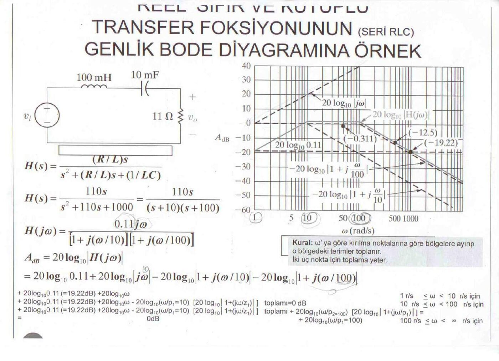
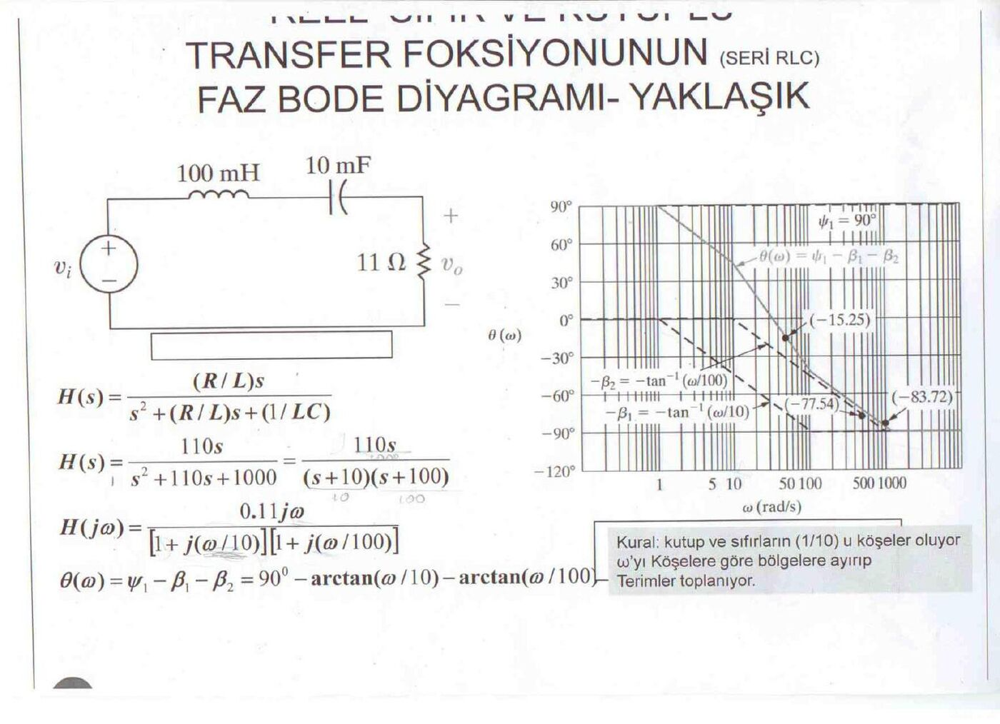

· EEM308
EEM308 Sinyaller ve Sistemler II: Seri RLC Devresinin Genlik ve Faz Bode Diyagramı Örneği (Kaynağı Belirsiz Slayt Çıktısı)
EEM308 – Sinyaller ve Sistemler II · 22.03.2015 · 16.10.2026
Bu yazı, EEM 308 Sinyaller ve Sistemler II klasöründe saklanan, Bode diyagramını bir seri RLC devresi örneği üzerinden anlatan iki sayfalık basılı slayt çıktısının taramasını aktarıyor. Türkçe slaytların yazarı belgede yazmıyor; dosya adı ("selda") ve aynı klasördeki diğer belgeler, çıktının dersin hocası Yrd. Doç. Dr. Selda Güney'in slaytlarından olabileceğini düşündürüyor. Devre ve grafikler, Nilsson & Riedel'in Electric Circuits kitabındaki Bode diyagramı örneğinin şekilleriyle aynı. Sayfalarda kalemle yapılmış birkaç işaret var. Taranmış PDF yazının sonunda indirilebilir.
Bu içerik üçüncü taraf bir kaynağa aittir; arşiv ve nostalji amacıyla kaynak belirtilerek paylaşılmıştır. Hak sahibinin talebi hâlinde kaldırılır.
Reel sıfır ve kutuplu transfer fonksiyonunun genlik Bode diyagramı
Devre: v_i kaynağına seri bağlı L = 100 mH, C = 10 mF ve R = 11 Ω; çıkış v_o direnç üzerindeki gerilim.
H(s) = (R/L)s / (s² + (R/L)s + 1/LC)
H(s) = 110s / (s² + 110s + 1000) = 110s / ((s + 10)(s + 100))
H(jω) = 0,11 jω / ([1 + j(ω/10)] [1 + j(ω/100)])
A_dB = 20 log₁₀ |H(jω)| = 20 log₁₀ 0,11 + 20 log₁₀ |jω| − 20 log₁₀ |1 + j(ω/10)| − 20 log₁₀ |1 + j(ω/100)|
Kırılma frekansları ω = 10 rad/s ve ω = 100 rad/s. Asimptotik eğri bölge bölge şöyle toplanıyor:
| Bölge | Etkin terimler | Asimptot |
|---|---|---|
| 1 ≤ ω < 10 rad/s | 20 log₁₀ 0,11 + 20 log₁₀ ω | +20 dB/dekad; ω = 1'de ≈ −19,2 dB |
| 10 ≤ ω < 100 rad/s | 20 log₁₀ 0,11 + 20 log₁₀ ω − 20 log₁₀ (ω/10) | 20 log₁₀ 1,1 ≈ 0,8 dB, yaklaşık 0 dB (yatay) |
| 100 ≤ ω < ∞ | yukarıdakiler − 20 log₁₀ (ω/100) | −20 dB/dekad |
Grafikteki işaretli gerçek değerler: ω = 50 rad/s'de −0,311 dB, ω = 500 rad/s'de −12,5 dB, ω = 1000 rad/s'de −19,22 dB.
Kural: ω ekseni kırılma noktalarına göre bölgelere ayrılır, o bölgedeki terimler toplanır. İki uç nokta için toplama yeter.

Not: Slaytın alt satırlarında 20 log₁₀ 0,11 için "= 19,22 dB" yazıyor; doğrusu 20 log₁₀ 0,11 ≈ −19,17 dB. Grafikteki −19,22 dB ise ω = 1000 rad/s'deki gerçek değer: |H(j1000)| = 110 / (√(1+100²)·√(1+10²)) ≈ 0,1094 → −19,22 dB. Ayrıca başlıktaki "FOKSİYONUNUN" kelimesi "fonksiyonunun" olmalı.
Faz Bode diyagramı (yaklaşık)
θ(ω) = ψ₁ − β₁ − β₂ = 90° − arctan(ω/10) − arctan(ω/100)
Paydaki jω terimi sabit ψ₁ = 90° katkı verir; her kutup kendi köşe frekansının bir dekad altından (ω_k/10) bir dekad üstüne (10ω_k) kadar −45°/dekad eğimle toplam −90° ekler. Grafikteki gerçek değerler: ω = 50 rad/s'de −15,25°, ω = 500 rad/s'de −77,54°, ω = 1000 rad/s'de −83,72°.
Kural: Kutup ve sıfırların 1/10'u (ve 10 katı) köşeler oluyor; ω'yı köşelere göre bölgelere ayırıp terimler toplanıyor.

Not: Değerleri kontrol ettik: θ(50) = 90° − 78,69° − 26,57° = −15,26°, θ(500) = 90° − 88,85° − 78,69° = −77,54°, θ(1000) = 90° − 89,43° − 84,29° = −83,72°.